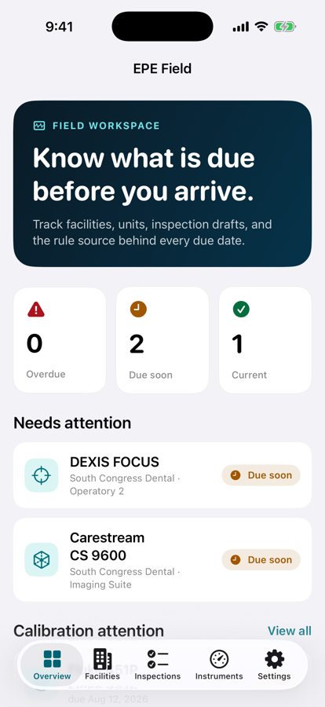
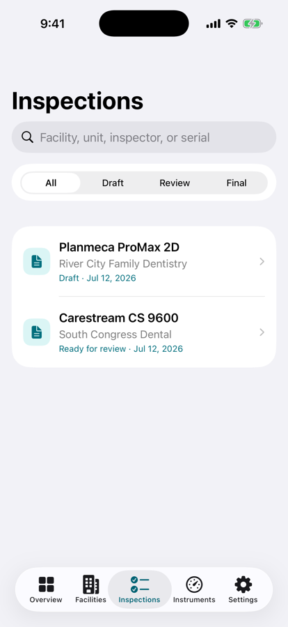
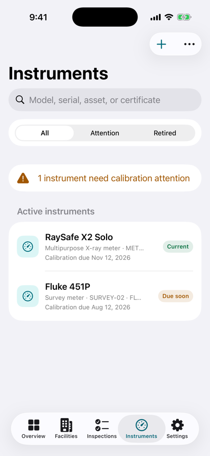
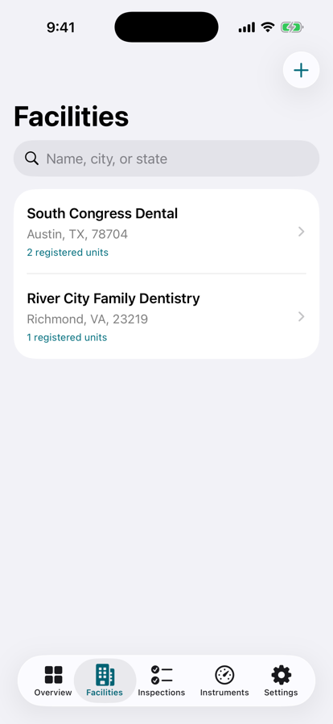

Field workspace for inspectors
An equipment performance evaluation is a day of measurements and a lifetime of paperwork. This app keeps the facilities, the units, the due dates, the instrument you measured with, and the numbers you wrote down in one place — then locks the record when you sign it.
Get it on the App Store $39.99 · iPhone & iPad · on your Home Screen as EPE Field

The same four movements every time, so nothing depends on remembering which notebook a measurement went into.
01 / PLAN
Facilities, rooms, and X-ray units with jurisdiction-aware due dates and the policy source behind each one. Texas is fully mapped; Virginia and Colorado ship as starter references.
02 / MEASURE
Timer, kVp, reproducibility, collimation, entrance exposure, tube stability, and the exposure switch — guided, in order, with the instrument you actually used attached.
03 / REVIEW
A readiness checklist refuses to hand you a signature page until identity, instrument, and observations are all present.
04 / SIGN
Inspector attestation, irreversible finalization, snapshots of the facility, unit, measurements, policy, and certificate, and a PDF with a SHA-256 fingerprint.
An audit does not care what you remember. It cares what the record says and whether it changed.

Draft, ready for review, and final are distinct states. Nothing quietly becomes an official record.

Your meters with their certificates, calibration dates, and current, due-soon, expired, or retired status.

Practices, rooms, and equipment identity kept together — and correctable later without orphaning the inspections attached to them.
The app's opinions are the ones that keep a record defensible. It enforces them rather than warning you.
If the meter you selected was out of calibration on the day, the inspection cannot be signed. The certificate details are preserved inside the finalized record.
Identity, instrument, and recorded observations are all required before the attestation screen will open.
Finalizing captures the facility, unit, measurements, policy, and calibration as they stood. Later corrections cannot rewrite a signed report.
Attach photographs of equipment and readings. The app reminds you, explicitly, that patient information does not belong in them.
CSV import matched on serial number, updating duplicates in place and warning on partial rows, with attached certificates preserved.
Calibration certificate PDFs stored securely on device, up to 20 MB each, available when the practice has no signal.
Optional local notifications at thirty days, seven days, and the due date. Nothing leaves the phone to make them work.
Dynamic Type reflow, VoiceOver labels, and an adaptive light and dark status palette for operatories with the lights down.
Dental X-Ray EPE Workflow is a workflow tool, not a certification authority. It does not determine regulatory pass or fail status, authorize inspectors, or replace qualified professional judgement. Every pass/fail decision remains with the authorized professional who signed the report.
The jurisdiction due-date references shipped with the app must be reviewed by a qualified inspector against the current rule before production use. The app shows you the source behind each due date precisely so that review is possible.
Workspace data is stored on the device. There is no account, no server of ours, and no patient data anywhere in the app.